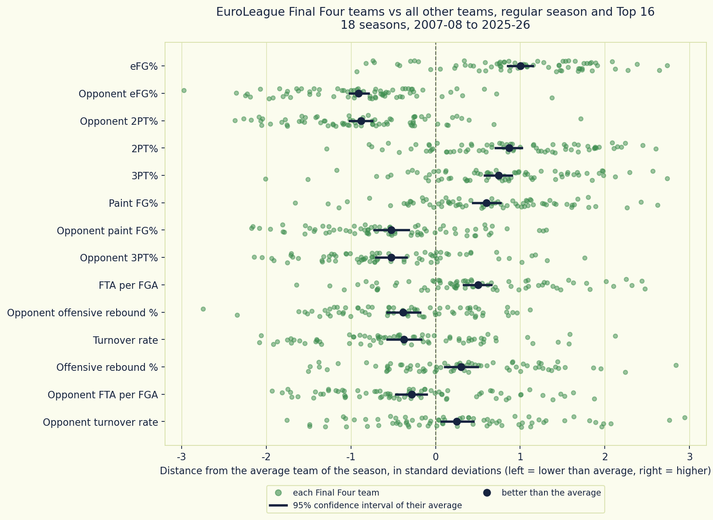
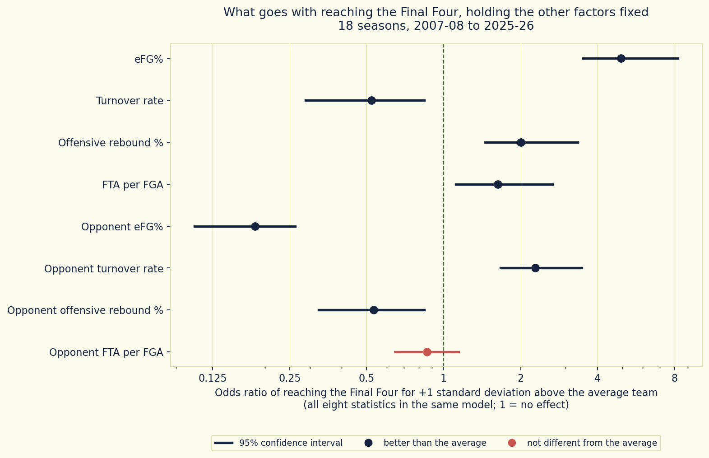

A comparison of the teams that reach the Final Four with all other teams of their season, using regular season and Top 16 statistics, from distance to the season average to a logistic regression and a leave-one-season-out prediction test.
The data are EuroLeague box scores and shot coordinates from the 18 seasons with a Final Four between 2007-08 and 2025-26 (2019-20 was canceled). Only regular season and Top 16 games are used. Play-offs, play-in and Final Four games are left out, so the statistics describe how teams performed before the games that decide who qualifies. For each team and season there are shooting percentages (effective field goal percentage, 2-point, 3-point and paint), turnover rate, offensive rebound percentage and free throw attempts per field goal attempt (FTA per FGA), both for the team and for its opponents, which describes its defence.
Each statistic is compared with the average team of the same season. The distance is measured in standard deviations: zero is the average team, and one standard deviation is the typical gap between a team and the average. For eFG% it is about 2.7 points. Left of zero means lower than the average, right means higher. For turnover rate and for everything the opponents do, lower is better, so a good defence appears on the left.
A logistic regression then puts eight of these statistics in the same model, to see what matters when the others are held fixed. The outcome is 1 if the team reached the Final Four. Results are odds ratios for +1 standard deviation above the average, where 1 means no effect. Finally, the model is tested out of sample: it is fitted on 17 seasons (training set), and it picks the four teams it considers most likely to qualify in the 18th season (test set). This is repeated for each season. It is a leave-one-season-out cross-validation: a whole season is left out each time, not a single team, because the teams of a season share the same average.
Each statistic is measured for the team and, in the same way, for its opponents, which describes the team's defence. For the opponents' statistics lower is better, except for the opponent turnover rate, where higher is better because those are turnovers the team forced. Shooting, turnovers, rebounding and free throws are the "four factors" of basketball analytics.

All 14 statistics are on the better side of the average, and none of the intervals include zero. The biggest gaps are in shooting, on both sides of the ball: eFG% is 1.0 standard deviations above average, and opponent eFG% is 0.9 below. Free throws and the other three factors (rebounds, turnovers) are smaller but still clear.
In real units: on average, a Final Four team shoots 2.7 points of eFG% better than the average team of its season, and its opponents shoot 2.3 points worse.
| Statistic | Mean distance (SD) | 95% interval | Teams better than average |
|---|---|---|---|
| eFG% | +1.00 | +0.85 to +1.15 | 62 of 72 |
| Opponent eFG% | -0.91 | -1.02 to -0.79 | 65 of 72 |
| Opponent 2PT% | -0.88 | -1.01 to -0.75 | 63 of 72 |
| 2PT% | +0.87 | +0.71 to +1.02 | 58 of 72 |
| 3PT% | +0.74 | +0.58 to +0.90 | 59 of 72 |
| Paint FG% | +0.60 | +0.44 to +0.76 | 55 of 72 |
| Opponent paint FG% | -0.53 | -0.73 to -0.32 | 53 of 72 |
| Opponent 3PT% | -0.52 | -0.70 to -0.34 | 53 of 72 |
| FTA per FGA | +0.50 | +0.33 to +0.66 | 54 of 72 |
| Opponent offensive rebound % | -0.39 | -0.57 to -0.19 | 49 of 72 |
| Turnover rate | -0.37 | -0.57 to -0.17 | 49 of 72 |
| Offensive rebound % | +0.30 | +0.11 to +0.50 | 45 of 72 |
| Opponent FTA per FGA | -0.28 | -0.47 to -0.11 | 48 of 72 |
| Opponent turnover rate | +0.25 | +0.07 to +0.45 | 41 of 72 |
Each interval is a bootstrap over the 18 seasons, averaging the four Final Four teams of each season.
For each team-season i, let pi be the probability that the team reaches the Final Four. The model is:
where each z is the distance of the team from the average of its season, in standard deviations: z = 0 means exactly average on that statistic, z = +1 means one standard deviation above average.
Odds compare the chance that something happens with the chance that it does not: a 20% chance means odds of 1 to 4 (0.25), 50% means 1 to 1, and 80% means 4 to 1. The model works on the logarithm of the odds because a probability must stay between 0 and 1, while the right-hand side of the formula can take any value.
β is multiplied by z because the right-hand side is a weighted sum: β is the weight that the model gives to a statistic, and z is how far the team is from average on it, so β · z is the contribution of that statistic to the log-odds of the team. A team exactly average on a statistic (z = 0) gets nothing from it, a team one standard deviation above average gets β, and one two standard deviations above gets 2β. β0 is the log-odds of a team that is exactly average on all eight statistics.
The coefficients β are on a log scale, which is hard to read, so the tables show their exponential, the odds ratio (OR):
Adding β to the log-odds is the same as multiplying the odds by the odds ratio. So the odds ratio is the factor by which the odds are multiplied for +1 standard deviation of that statistic, with the other seven fixed.
The model has a ridge penalty, which slightly shrinks the coefficients toward zero. With 72 events and eight correlated statistics, a plain fit gives unstable coefficients, and the penalty keeps them from becoming extreme.

With all eight statistics in the same model, the two shooting statistics remain far ahead of the others. In practice, one standard deviation more eFG% (about 2.7 points) multiplies the odds of reaching the Final Four by 4.9, and opponents shooting one standard deviation worse (about 2.5 points lower) multiplies them by about 5.5. The other factors have odds ratios of about 2, or about 0.5 where lower is better: for example, one standard deviation more offensive rebound percentage (about 3 points) doubles the odds. Only opponent FTA per FGA has an interval that includes 1 (0.86, interval 0.64 to 1.14).
| Statistic | Odds ratio | 95% interval | Better direction |
|---|---|---|---|
| eFG% | 4.94 | 3.51 to 8.24 | higher |
| Turnover rate | 0.52 | 0.29 to 0.84 | lower |
| Offensive rebound % | 2.00 | 1.45 to 3.34 | higher |
| FTA per FGA | 1.63 | 1.11 to 2.66 | higher |
| Opponent eFG% | 0.18 | 0.11 to 0.26 | lower |
| Opponent turnover rate | 2.28 | 1.67 to 3.47 | higher |
| Opponent offensive rebound % | 0.53 | 0.32 to 0.84 | lower |
| Opponent FTA per FGA | 0.86 | 0.64 to 1.14 | lower |
The best test of a model is to see whether it works on data it has never seen. For each of the 18 seasons we used only regular season and Top 16 statistics, that is, everything that comes before the play-offs that decide who qualifies, and we did the following:
The model found, on average, 2.9 of the 4 real Final Four teams per season (95% interval 2.7 to 3.0). In 16 seasons out of 18 it found exactly 3 of the 4, in the other 2 it found 2, and it never found all 4. For example, in 2024-25 it picked Anadolu Efes, Olympiacos, Panathinaikos and Monaco, and the real Final Four were Monaco, Olympiacos, Panathinaikos and Fenerbahce.
Picking 4 teams at random finds 0.8 on average: with about 20 teams, each has roughly 1 chance in 5, so 4 random picks contain 0.8 real ones. At random, finding 3 or more happens in only about 1 season out of 70. In 20,000 simulated random draws the best average was 1.56, far from 2.9 (p < 0.001).
A model with only eFG% and opponent eFG% finds 2.7 of the 4. One that uses only the four offensive statistics finds 2.4, and one that uses only the four defensive statistics finds 2.1.
A standard deviation is only a way to compare statistics. In their own units, the gaps of the Final Four teams from the season average are the following.
| Statistic | Gap (points) | 95% interval | One SD (points) |
|---|---|---|---|
| eFG% | +2.75 | +2.18 to +3.34 | 2.65 |
| Opponent eFG% | -2.27 | -2.66 to -1.89 | 2.45 |
| 2PT% | +2.46 | +1.91 to +3.04 | 2.74 |
| 3PT% | +2.14 | +1.58 to +2.68 | 2.77 |
| FTA per FGA | +1.84 | +1.14 to +2.50 | 3.74 |
| Opponent FTA per FGA | -1.29 | -2.20 to -0.44 | 4.62 |
| Offensive rebound % | +0.88 | +0.21 to +1.51 | 3.01 |
| Opponent offensive rebound % | -0.93 | -1.33 to -0.52 | 2.38 |
| Turnover rate | -0.60 | -0.91 to -0.29 | 1.47 |
| Opponent turnover rate | +0.42 | +0.12 to +0.75 | 1.46 |
Shooting gaps are large, about 2.7 points of eFG% above average and 2.3 points below for the opponents. The gaps in rebounds, turnovers and free throws are modest: 0.9 points of offensive rebound percentage, 0.6 points of turnover rate. They are different from zero, but small next to shooting.
In short, the effect of shooting is large and stable, while the effects of rebounds, turnovers and free throws are modest in size but consistent in direction.
We ran the same analysis on the 18 champions alone, instead of the 72 Final Four teams. Like every Final Four team, the champions shoot well: their eFG% is on average 2.5 points above the average team of their season (interval 1.7 to 3.5), their opponents' eFG% is 1.8 points lower, they get 3.2 more free throw attempts per 100 field goal attempts, and their turnover rate is 0.9 points lower.
In other areas, though, champions look like an average team. Their offensive rebound percentage is only 0.3 points above average (interval -0.9 to +1.4), they force 0.3 points more turnovers (interval -0.3 to +0.9), and their opponents get 0.7 points fewer offensive rebounds (interval -1.6 to +0.3). All three intervals include zero, which means that, with 18 champions, we cannot tell these gaps from no gap. The regression gives the same message: for offensive rebounds the odds ratio is 1.1 (interval 0.7 to 1.8), and an interval that includes 1 means no clear effect.
The champion against the other three finalists. Compared with the other three Final Four teams of the same season, the champions show no clear difference on any statistic. In other words, season statistics help to find who reaches the Final Four, but not who wins it once there. With 18 seasons we cannot tell why: either the champion's edge over the other finalists is small, so that 18 seasons are too few to see it, or the title depends on factors that season statistics do not capture.